| |
"Arucol"
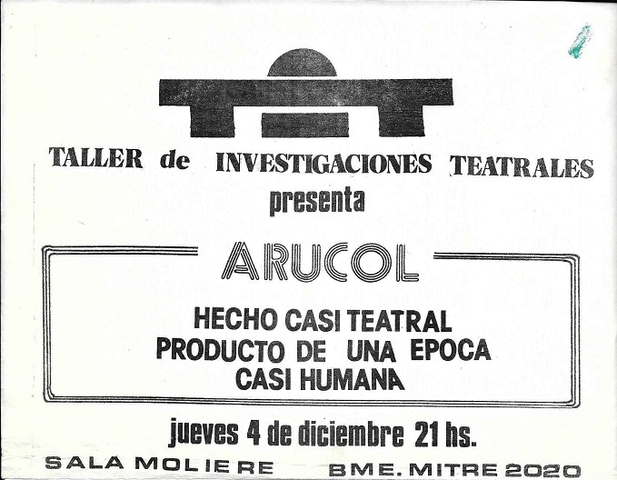
Durante
1980 Gallego, generosamente, propuso que algunos miembros del grupo tuvieran
su primera experiencia en el rol de dirección de un proceso, que podía o no
terminar en un montaje. Durante 2 ó 3 meses Batata dirigió al grupo en una
investigación teatral sobre la locura, que culminó en el hecho teatral Arucol
el 4 de diciembre de 1980 en la Sala Moliere de Buenos Aires. El objetivo
secreto era transmitir la sensación de locura, generar climas de locura, sin
hacerse los locos, sin estereotipos, sin explicitar el tema, sin nombrarlo; la
gente que acudiera al montaje debía sentir la locura pero no debía
intelectualizarla, no se le debía pasar por la mente que "eso" se
trataba sobre la locura. Durante el proceso, en los ensayos, el grupo fue explorando
y descubriendo los gestos, los movimientos, las voces, las actitudes, las
situaciones, las relaciones, los textos, los silencios, que podían lograr ese
objetivo. Inevitablemente se colaron muchas cosas que tenían que ver con la
asfixiante y trágica situación política y social que se estaba viviendo,
marcada por la dictadura militar genocida. Fue inevitable porque los titeanos la
odiaban, querían voltearla, y como artistas no podían esconder eso. Pero también
porque esa situación tenía mucho que ver con la locura: la de los psicópatas
represores-torturadores, y la que creaban en la mayoría de la sociedad
sojuzgada. |
|
Las 2 páginas del primer guión tentativo (partitura)
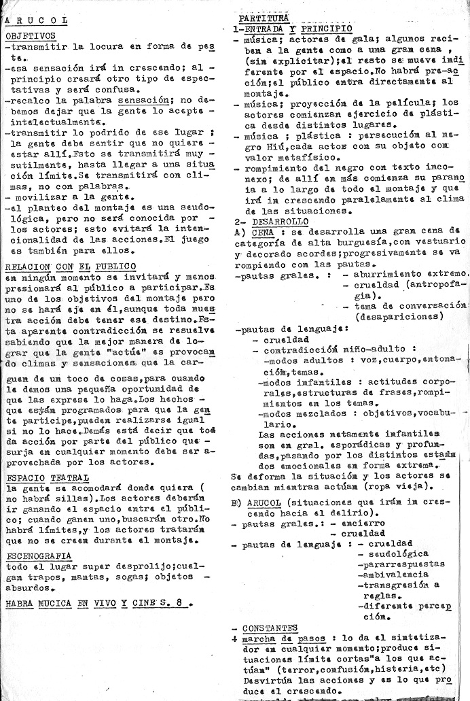
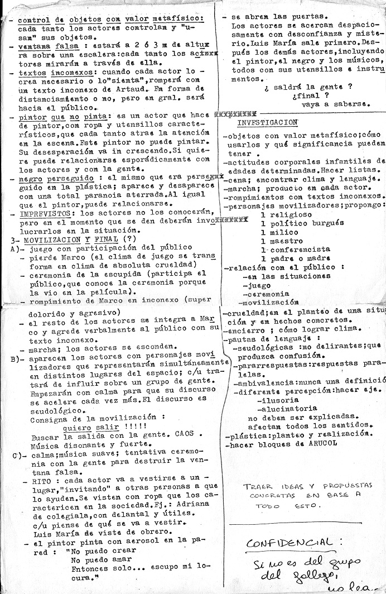 |
|
Los bloques
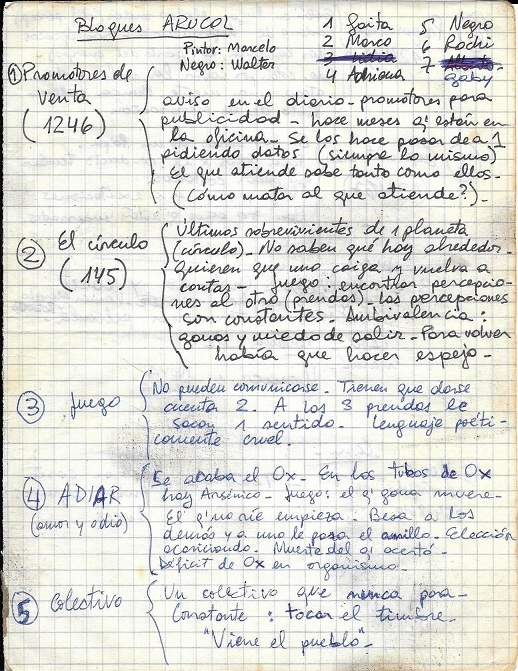 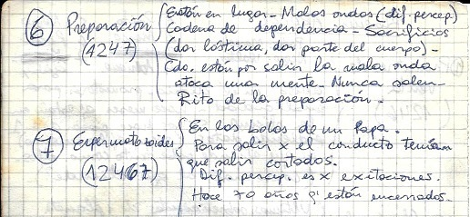
Para la parte central (punto B al final de la página 1 del guión), se prepararon
varios bloques durante los ensayos, con el método de creación colectiva. Los temas de
los bloques que se ven en las imágenes de manuscritos que rodean estos
párrafos eran conocidos por los actores
pero no debían ser explícitos; solo servían para mantener una columna
vertebral en cada bloque que guiara la acción, pero los temas no eran en
absoluto importantes, solo importaba lo que provocaban las acciones. Por ejemplo
el bloque 5 se trataba de un espacio pequeño que representaba un colectivo (un
bus) que no paraba nunca; eso no era sabido por el público, pero hacía que los
actores debieran compartir ese espacio con cierta esperanza y casi resignación;
cada tanto uno de ellos "tocaba el timbre" (imaginario) esperando que
el bus frenara, y todos se agolpaban a saludar cuando pasaban por un pueblo.
En la parte de arriba de la imagen de la izquierda se ve la lista de
actores. Walter (representaba un negro perseguido), el Gaita (Gallego), el Negro
(Luis María Brand), Adrianita, Rochi (Américo), Gaby (Gabriela Liffschitz), Marinho
(Marco Sadowski). Salvo Adriana y Gaby, que eran más jóvenes, todos tenían entre
20 y 23 años. Luego de esta lista se incorporó Paula Caraballo. También
Silvina Epsztein, quien
finalmente fue quien interpretó al pintor-artista plástico: cada tanto armaba
su atril con un lienzo en blanco en algún lugar y atraía la atención (las
luces se posaban en ella); durante unos minutos intentaba pintar la escena, pero
en ningún momento lograba hacer la primera pincelada; al final del hecho
teatral, con la música de Onmadawn (de Mike Oldfield) de fondo, pintó con
aerosol una de las paredes de la sala (empapelada a tal efecto) con la frase
"No puedo crear, no puedo amar, solo puedo escupir sobre mi propia
locura". Marcelo Cirelli (del Grupo de Ricardo) tocó
la batería en vivo, improvisando en algunos pasajes junto a Roberto del TiM (Taller de Investigaciones
Musicales), quien tocó guitarra eléctrica. Mientras
Silvina hacía la pintada, los actores eligieron cada uno un espacio donde
vestirse con ropa de calle induciendo a la gente que tenían alrededor a que los
ayudasen, y luego salieron de la sala hacia la calle.
|
|
El espacio
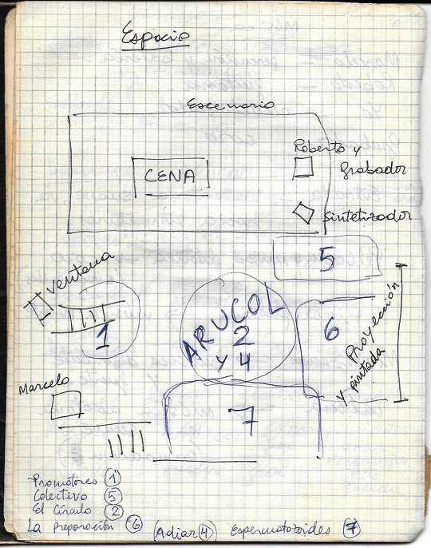
Se
sacaron las sillas de la sala. La gente debía compartir el espacio con los
actores, y eso era dinámico. El escenario solo se usó para la cena de gala:
una mesa y sillas, modales elegantes y delicados; los actores realmente comían
mientras hablaban sobre los desaparecidos (detenidos-desaparecidos por la
dictadura) sin nombrar esa palabra (la audiencia no sabía de qué
tema se hablaba, solo los actores); en la conversación se colaban comentarios
sobre los comidos, porque en realidad la cena era un acto de antropofagia (otro
tema secreto).
Se determinaron los espacios tentativos para los bloques (en el
diagrama aparecen con el número de cada bloque) y los lugares para Roberto y su guitarra, Marcelo y su
batería. Batata manejaba un sintetizador, con el que cada tanto hacía algunos
sonidos; por ejemplo una marcha de botas de soldados que cuando la hacía sonar,
los actores debían esconderse, pero algún actor (el que lo sintiera en ese momento) debía hacer un rompimiento con
texto inconexo dirigido a la gente: frases en un idioma incomprensible o ininteligible, donde lo
importante no eran las palabras sino la forma de decirlas (gestos y actitudes
corporales, tono y timbre de la voz, sentimiento de miedo, o furia, o asco); Rochi dijo frases en su lengua madre
(húngaro), Gallego recitó un poema inconexo de Artaud, y Marinho dijo
un texto inconexo improvisado en ese instante.
La pared donde dice "Proyección" en la imagen-diagrama es
donde al principio del montaje se proyectó una película super 8 que Batata había
filmado en los días previos con miembros de diferentes grupos en la casona del TiT de la calle San
Juan; en ella los actores interactúan con sus objetos de valor metafísico y
realizan la ceremonia de la escupida (ambos temas propuestos en la página 2 del
guión). Mientras se proyectaba la película un negro (Walter) era perseguido
por el resto en un ejercicio de plástica (Walter corría por el espacio a
velocidad normal, el resto se dirigía con movimientos de "cámara
superlenta" desde distintos puntos de la sala hacia el lugar donde
finalmente lo atraparían). La película se proyectó acompañada por un coro
de voces disonantes que minutos antes de la puesta grabaron todos los
participantes alrededor de un grabador de casets. El resultado fue muy
interesante, pero lamentablemente esa grabación se perdió años después.
|
|
La película (Link al video)
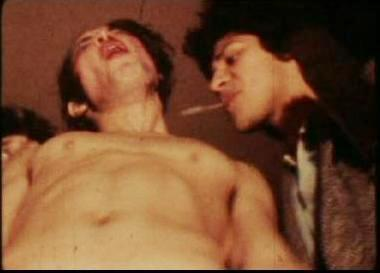 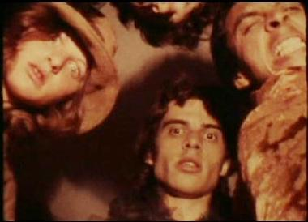 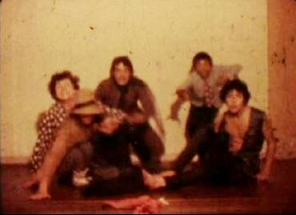
|
|
El volante al entrar
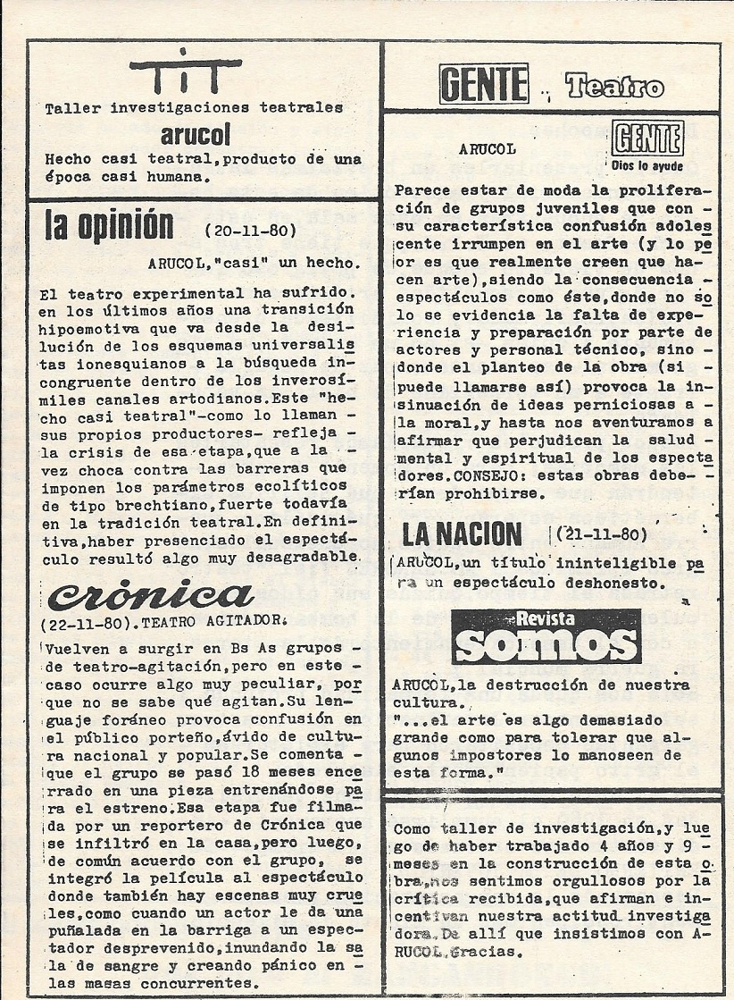 Al entrar, el público recibía un volante. A la izquierda se ve la tapa o
frente, donde se leen comentarios de medios gráficos de la época. Por supuesto
era todo ficticio, ya que Arucol se hizo una sola vez. A Batata se le ocurrió
escribirlos simulando el léxico y la ideología de cada medio, imaginando lo
que realmente podrían escribir sus reporteros si presenciaran el montaje.
|
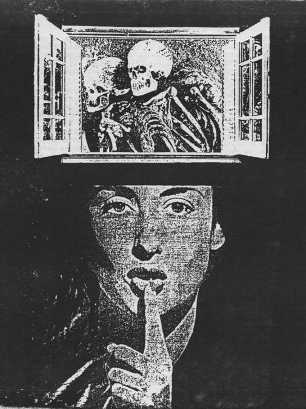
Contratapa: la imagen de la mujer es una enfermera que usualmente se utilizaba
en los carteles de la vía pública de Buenos Aires para indicar "Silencio, Hospital"
(debajo: la imagen original). Por supuesto
toda la contratapa reflejaba la situación de opresión y terrorismo de Estado que se vivía en esos
días.
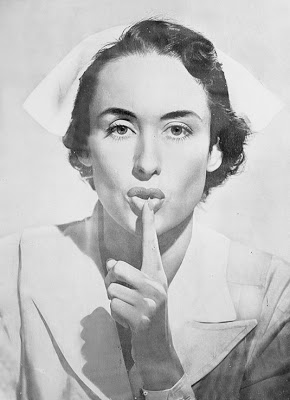
|
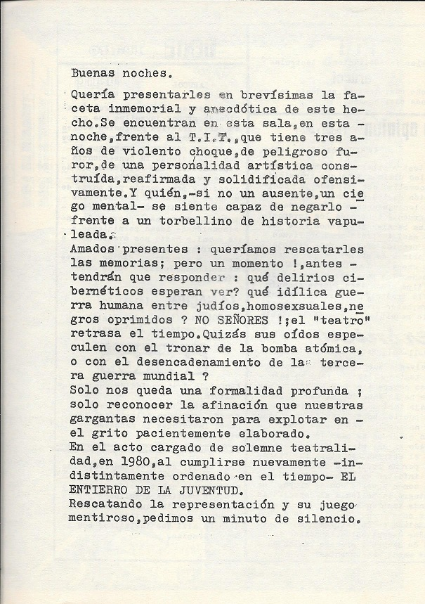 Pagina interior izquierda, con un texto de Diana (imagen debajo), del Grupo de
Marta, quien en
ese momento contaba con... ¡15 años de edad!
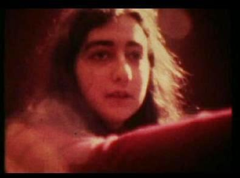
|
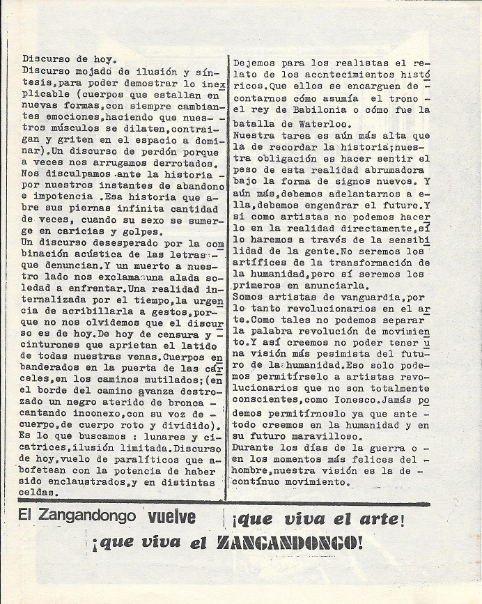 Pagina interior derecha. La columna de la
izquierda la escribió Batata ("Discurso
de hoy"); la de la derecha la escribió Gallego
("Dejemos para los realistas...").
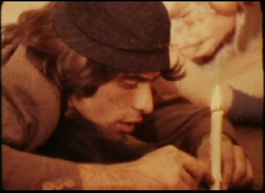
|
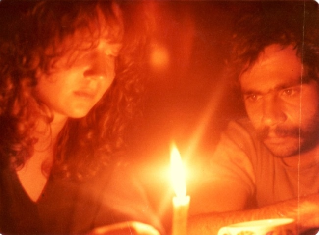
Paula y
Batata durante la preparación del montaje.
|

|